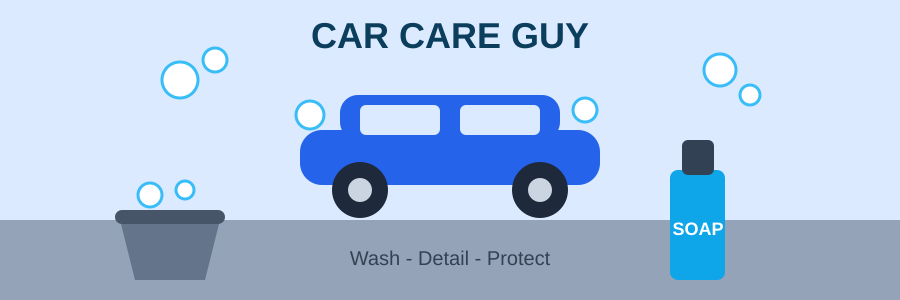

Start with the guide you need
Each guide below is a complete, standalone page. Use the tables and checklists as they are, or copy them into your own notes and adapt the quantities to your car, your products and the labels on the bottles you own.
1. Car Wash Soap Dilution Calculator and Usage Guide
Learn what ratios such as 1:10 mean, work out how much soap to add to a bucket or foam cannon, and see worked examples for 1-litre, 5-litre and 10-litre mixes.
2. DIY Car Detailing Cost Calculator
Estimate the cost of a DIY wash and detail, compare a starter kit with a fuller kit, and work out your cost per wash over a year.
3. Car Care Maintenance Schedule Template
A weekly, monthly and seasonal template for washing, protecting paint, checking tyres, glass, wipers and interior care, with tick-box checklists.
4. Microfiber Towel Inventory and Washing Tracker
Keep track of towel types, uses and condition, and follow a washing routine that keeps towels soft, absorbent and free from grit.
5. Car Wash Product Compatibility Checklist
Check a product against your paint, coating, trim, glass and interior surfaces before you use it, and learn what never to mix.
A simple rule for every page
Always follow the label on the product you are holding. The guides on this site give general starting points and worked examples. If a label, your vehicle handbook or a coating manufacturer gives a different instruction, follow that instruction. For more car care guides, visit Car Care Guy at carcareguy.com.